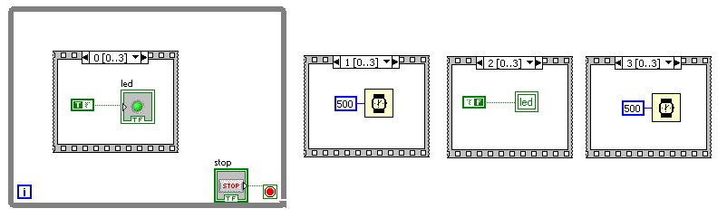

Laborator LabVIEW tip date
Teme program
Afisati cate un led consecutiv-lumina dinamica comandata de la un knob.
Afisati un led care se aprinde la intervale de 500 ms
-lumina dinamica comandata de la un knob prin afisarea puterilor lui 2-aplicatia
op_biti_l1
Diagrama logica fiind:
Pentru a schimba sensul luminii se face operatia 2^(7-val knob)
-lumina dinamica din ambele sensuri
op_biti_l2
-Se face opreatia 255-val pentru a obtine efectul negat
-Se editeaza iconita in ideea realizarii ulterior a unui SVI
-Led care se aprinde la intervale de 500 ms
op_num_l0
